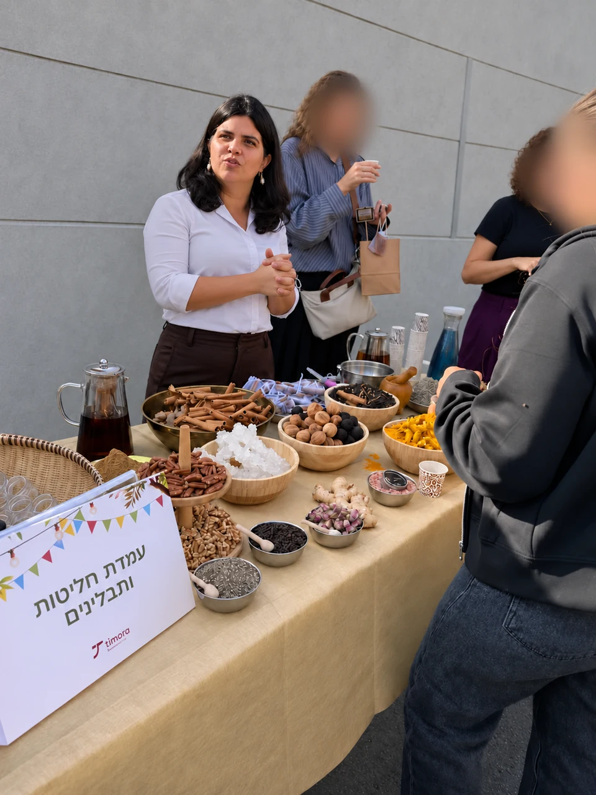
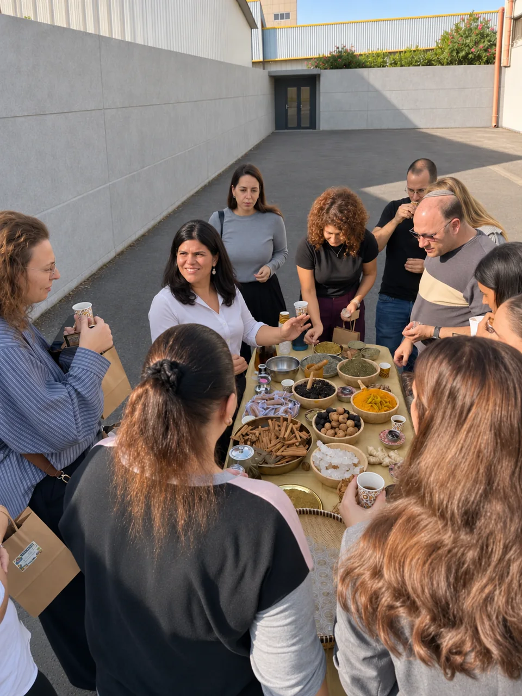
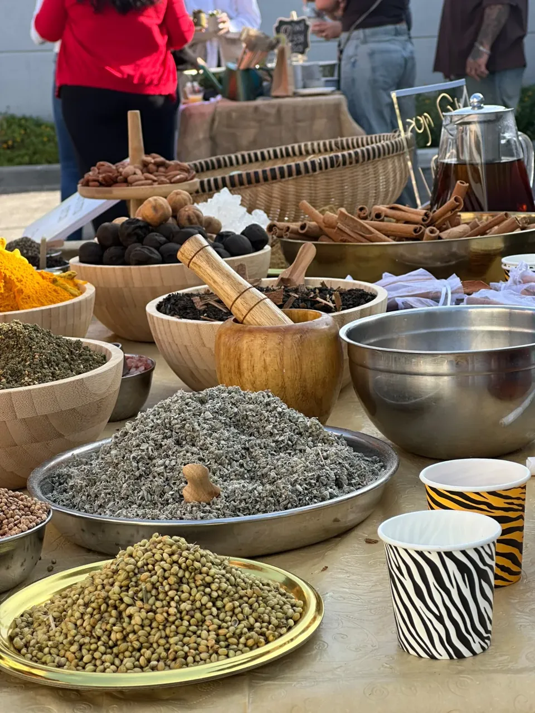
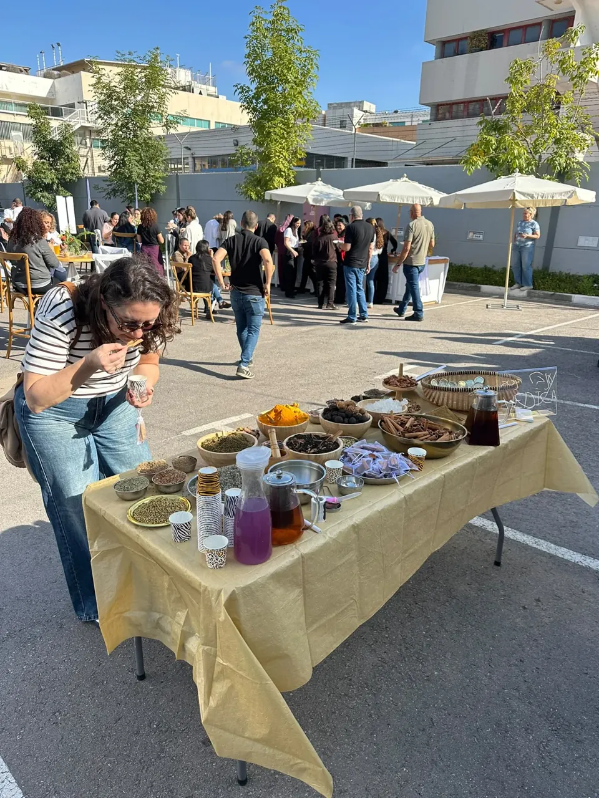
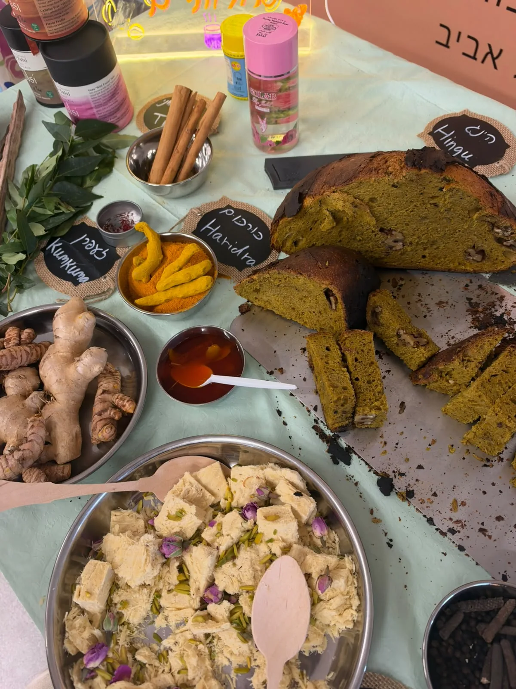
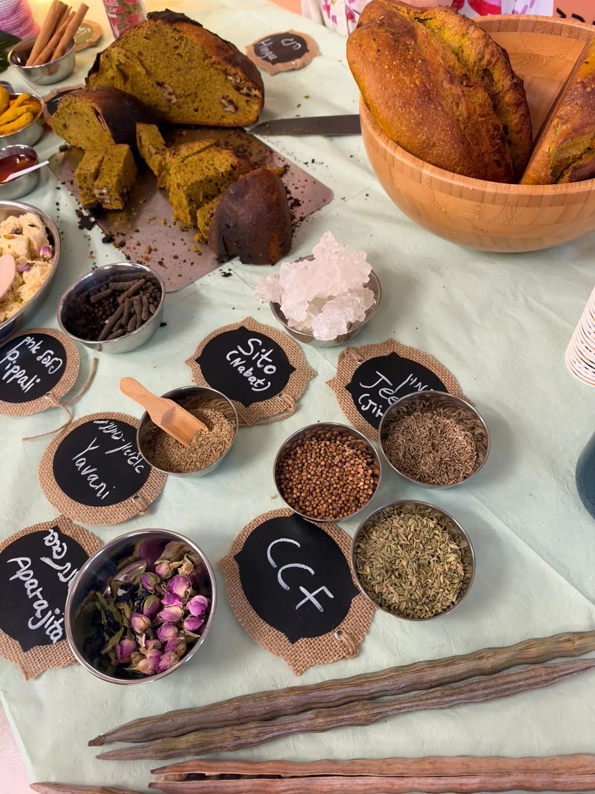
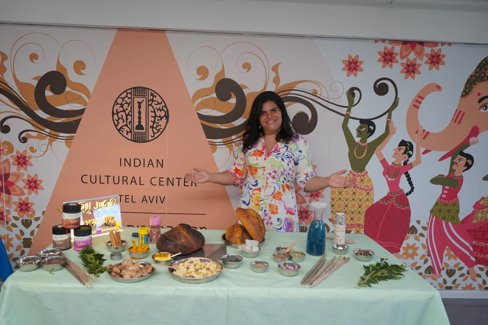
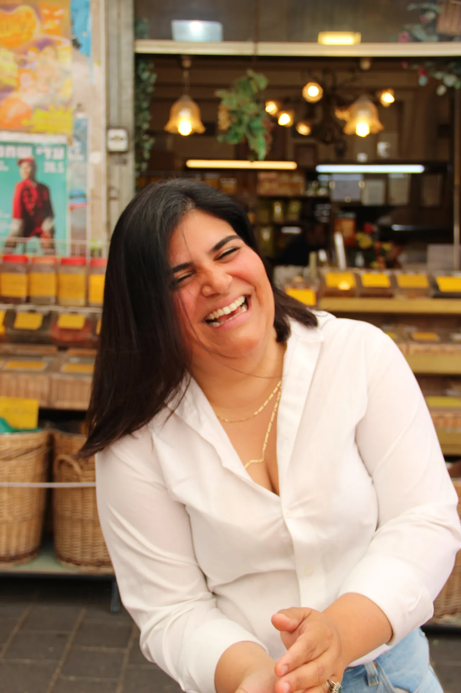

טועמים חליטות, מכירים תבלינים ומדברים על בריאות ואיורוודה בשפה פשוטה.
לחברות הפקה • לארגונים • לימי בריאות וכנסים
דוכני לונג׳ביטי
על דרך המשי
מסע של חליטות, תבלינים וטעימות בהשראת דרך המשי, עם ענבל הנסב והניסיון שלה כמטפלת באיורוודה וברפואה פרסית. דוכן פתוח ליום הפעלה, ליום בריאות או לכנס, עם סיפורים ורעיונות לשגרת היום־יום.

לחברות הפקה ולמפיקי אירועים
דוכן תוכן לאירוע הבא שלכם
מפיקים יום פעילות, כנס או יום בריאות ללקוח? אפשר לשלב בהפקה שלכם דוכן לונג׳ביטי על דרך המשי: טעימות וסיפורים מעולמות הודו ופרס, יחד עם הניסיון של ענבל באיורוודה וברפואה פרסית. נתאם את התוכן לקהל, ללוח הזמנים ולמקום, מול איש הקשר מטעם ההפקה.
אפשר להזמין דוכן בפני עצמו או לבדוק שילוב של הרצאה או סדנה קצרה. מספר העמדות, משך הפעילות, הציוד והמחיר יסוכמו בהצעה בהתאם להיקף האירוע.
מה לשלוח כדי שנתאים הצעה?
- שם חברת ההפקה והארגון שעבורו מתקיים האירוע
- תאריך, מיקום וסוג האירוע
- מספר משתתפים משוער ושעות הפעילות המבוקשות
- שפה, שטח זמין לדוכן וצרכים מיוחדים
את חלון ההקמה והפירוק, השולחן, המים החמים או החשמל לפי הצורך נסגור יחד מראש.
דרך המשי, איורוודה ורפואה פרסית
דרך המשי בכוס, בצלחת ובשיחה
דרך המשי היא ההשראה למפגש בין חליטות, תבלינים ומסורות אוכל מהודו ומפרס. ענבל מחברת את הניסיון שלה כמטפלת באיורוודה וברפואה פרסית למורשת הפרסית־איראנית שלה, דרך טעימות, ריחות וסיפורים. השיחה על לונג׳ביטי חוזרת להרגלי יום־יום ולאיכות חיים: מה מכינים במטבח, איך בונים שגרה ואיך עוצרים לרגע. זו חוויית תוכן, ללא בדיקות או אבחון רפואי.
מתחילים מכוס חליטה
מתחילים מהטעם והריח של החליטות. מכירים את חומרי הגלם ושומעים מה מרכיב כל שילוב.
מה יש בכוס ובצלחת?
בהשראת דרך המשי, קינמון, ורדים ותבלינים מוכרים פותחים שיחה על מסורות הודיות ופרסיות ועל המקום שלהן במטבח של היום.
רעיונות קטנים ליום־יום
איך מכינים חליטה ואיך משלבים תבלין מוכר בארוחה? יוצאים עם רעיונות פשוטים למטבח ולהפסקת התה בעבודה.
- כשעתיים של דוכן פתוח
- מגיעים בקצב האישי במהלך הפעילות. זמני הקמה ופירוק מתואמים בנפרד.
- חוויה לעובדים, ללא מכירה
- הפעילות כוללת טעימות והסברים בלבד. ההיקף והמחיר נקבעים מראש מול הארגון.
מהאירועים שלנו • תימורה (Timora)
דוכן חליטות ותבלינים באירוע של תימורה
טעימות ושיחה עם ענבל באירוע של תימורה, קרן נדל״ן. המשתתפים ניגשו לשולחן, הכירו את חומרי הגלם, טעמו חליטות ושאלו שאלות — מפגש פתוח שמחבר בין אנשים, טעמים וסיפורים.



מהדוכן באירוע של תימורה. הרכב הטעימות והיקף הפעילות באירוע שלכם יתואמו מראש.
מהאירוע בשגרירות הודו — אל האירוע שלכם
תמונות מהכנס בשגרירות הודו: דוכן של חליטות, תבלינים וטעימות, לצד שיחה על איורוודה. כך נראית החוויה במפגש עם הקהל.



התמונות מציגות את האירוע שהיה. הרכב הטעימות והחליטות באירוע שלכם יתואם מראש.
דוכן, הרצאה או סדנה — מה מתאים ליום שלכם?
אפשר לבחור פעילות אחת או לתאם שילוב לפי אופי האירוע והזמן שעומד לרשותכם.
דוכן חליטות ואיורוודה
כשעתיים של טעימות ושיחות קצרות בדוכן פתוח. מתאים לפעילות רווחה וימי בריאות שבהם העובדים מגיעים בזמנים שונים.
לפרטים על הדוכןהרצאת וולנס לארגונים
45–60 דקות של תוכן לקבוצה על תזונה, שינה, סטרס והרגלים ביום העבודה. בעברית או באנגלית, עם זמן לשאלות בתיאום מראש.
לנושאים להרצאהסדנה עם חליטות וטעימות
מפגש קבוצתי עם תבלינים, ריחות וטעמים, והיכרות מעשית עם שילובם בשגרה. משך הסדנה וההרכב מותאמים לקבוצה.
לסדנאות של ענבלמחפשים מפגש מחוץ למשרד? אפשר לתאם גם סיור והרצאה בשוק לוינסקי, או לבדוק מפגש ב״הפעמון״ בתל אביב לפי זמינות ואופי הקבוצה.

הניסיון המקצועי של ענבל פוגש את דרך המשי
ענבל — איורוודה, רפואה פרסית והסיפור האישי
ענבל הנסב, מייסדת VEDICA, היא מטפלת באיורוודה וברפואה פרסית ובוגרת בית הספר PranaVeda. את הניסיון שלה בעבודה עם אנשים, תזונה ושגרת חיים היא מביאה גם לדוכן, לצד המורשת המשפחתית הפרסית־איראנית שלה והאהבה לצמחים ולתבלינים.
כמו בסיורים שלה בשוק לוינסקי, גם כאן דרך המשי היא חוט שמחבר בין הודו, פרס והמטבח הביתי. מתחילים במשהו שאפשר לטעום ולהריח, וממשיכים לשיחה נגישה על מסורות, הרגלים ורעיונות שאפשר לקחת הביתה — עם מקום לשאלות ולמפגש אישי.
על ענבל והדרך שלה לאיורוודהנושאים אפשריים להרצאת וולנס
לארגונים שרוצים להקדיש זמן משותף לתוכן, לצד הדוכן או כמפגש בפני עצמו.
שינה וסטרס בעבודה
שיחה על שגרת יום, עומס, קפה, ארוחות והרגלי ערב, והקשר שלהם למנוחה וליום העבודה.
תזונה יומיומית ותבלינים
היכרות עם תבלינים, חליטות והרגלים פשוטים שאפשר לקחת למטבח ולהפסקה במשרד.
איורוודה בגובה העיניים
מבוא נגיש לאיורוודה, עונות השנה ושגרת היום, עם דוגמאות מחיי היום־יום ושאלות מהקבוצה.
מתכננים יחד את הפרטים
שלחו שם ארגון או חברת הפקה, מיקום, תאריך ומספר משתתפים משוער. הפעילות מוצעת בעיקר בתל אביב; התאמת המיקום, הפורמט, היקף הטעימות והמחיר נעשית מראש.
מתאימים לזרימת האירוע
נבדוק יחד מתי העובדים פנויים לגשת, היכן הדוכן ישתלב וכמה אנשים צפויים להשתתף לאורך הפעילות.
סוגרים ציוד והקמה
נתאם מקום, שולחן, מים חמים או חיבור לחשמל לפי הצורך, וזמן להקמה ולפירוק מעבר לשעות הפעילות.
מתאמים את הטעימות
הרכב החליטות, חומרי הגלם והצרכים התזונתיים יסוכמו מראש, לרבות מידע על רכיבים ואלרגנים.
שאלות נפוצות
איך דרך המשי והניסיון של ענבל משתלבים בדוכן?
הדוכן מחבר בין חליטות, תבלינים וסיפורי אוכל בהשראת דרך המשי לבין הניסיון של ענבל כמטפלת באיורוודה וברפואה פרסית והמורשת הפרסית־איראנית שלה. דרך טעימות ושיחה מכירים מסורות מהודו ומפרס ורעיונות לשגרת היום־יום.
מה המשמעות של לונג׳ביטי בדוכן?
זו פעילות תוכן וטעימות סביב איכות חיים והרגלי יום־יום: חליטות, תבלינים, אוכל ושגרה מנקודת מבט איורוודית. הפעילות אינה כוללת בדיקות, אבחון רפואי או הבטחה להארכת חיים.
האם חברות הפקה יכולות להזמין דוכן ליום הפעלה או לכנס?
כן. אפשר לפנות כחברת הפקה ולשלב דוכן באירוע ללקוח, ביום הפעלה או בכנס. שלחו שם חברת הפקה, סוג אירוע, תאריך, מיקום, מספר משתתפים משוער ושעות פעילות. מספר העמדות, התוכן, הציוד, זמני ההקמה והפירוק והמחיר יתואמו בהצעה.
מה כולל דוכן האיורוודה לארגונים?
דוכן פתוח לכשעתיים עם טעימות חליטות, היכרות עם תבלינים ושיחות קצרות על איורוודה והרגלי יום־יום. העובדים מגיעים בקצב שלהם. הפעילות כוללת טעימות והסברים בלבד, ללא מכירת מוצרים.
איפה מתקיימת הפעילות?
הדוכן מוצע בשלב זה בעיקר לארגונים וחברות בתל אביב. מגיעים אליכם למקום העבודה או למתחם האירוע, בתיאום מראש.
לכמה עובדים זה מתאים וכמה זה עולה?
מספר המשתתפים, אופן ההגעה לדוכן והמחיר נקבעים מול הארגון לפי היקף האירוע, מיקומו והפורמט המבוקש. לקבלת הצעה שלחו תאריך, מיקום ומספר עובדים משוער.
מה צריך להכין במקום?
לפני האירוע מתאמים יחד מקום לדוכן, שולחן מתאים, גישה למים חמים או לחשמל לפי הצורך וזמן להקמה ולפירוק. כשעתיים הן זמן הפעילות עם העובדים; פרטי ההקמה והציוד נסגרים מראש.
האם חייבים להכיר איורוודה?
אין צורך בידע קודם. מתחילים מהטעמים והריחות, מסבירים בגובה העיניים ונותנים רעיונות פשוטים לשילוב חליטות ותבלינים בשגרה.
אפשר להזמין גם הרצאה או סדנה?
כן. לצד הדוכן אפשר להזמין הרצאת וולנס של 45–60 דקות או סדנה עם טעימות. אפשר לקיים מפגשים בעברית או באנגלית; שילוב הפורמטים והזמן הכולל מתואמים בנפרד.
בואו נשלב דוכן באירוע שלכם
חברת הפקה, צוות רווחה או ארגון שמתכנן יום בריאות? שלחו תאריך, מיקום ומספר משתתפים משוער. נחזור אליכם לתיאום דוכן לונג׳ביטי ואיורוודה שמתאים לאירוע.